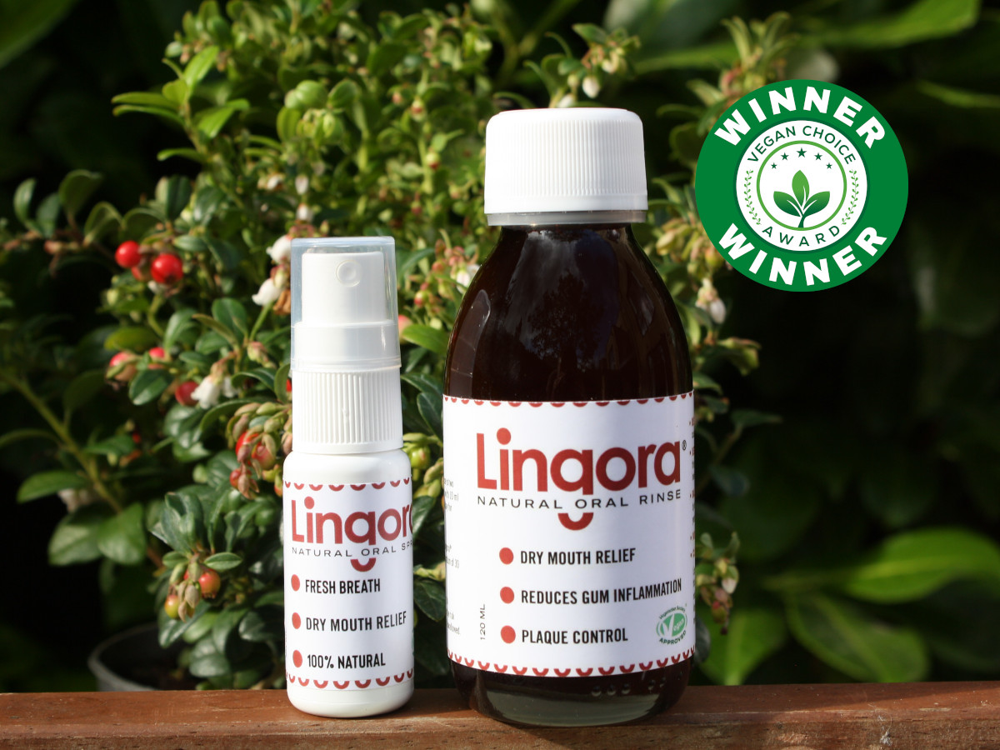
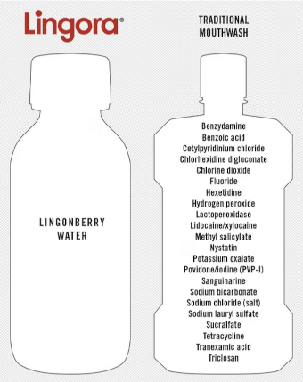

A natural innovation to aid oral home care.
Say hello! to Lingora®
The name, Lingora, incorporates the word Lingonberry with Oral to emphasise its all natural ingredients and oral health benefits.
Using a patented method, the natural occurring sugar-content of the lingonberry juice has been reduced by fermentation to a safe level for oral use.
Lingora® Natural Oral Health products are additive-free and suitable for all ages. Due to its all-natural ingredients, products are harmless if swallowed.
Dr Pirjo Pärnänen (Associate Professor in Oral Microbiology, DMD, PhD) has been researching fermented lingonberry juice for over 15 years, and has conducted a number of clinical studies with impressive outcomes.
Lingora® is a class I registered medical device in the UK and the EU (EUDAMED: 06429811111004).

Results of studies are outstanding
Laboratory and clinical studies have shown a reduction in dental plaque, gum inflammation and bleeding of the gums.
Additionally, Lingora alleviates the symptoms caused by dry-mouth, also known as xerostomia, by increasing saliva secretion. Saliva production is essential for maintaining good oral health. It helps wash away food particles, neutralises acids, and provides minerals that are important for tooth remineralisation. Saliva also contains enzymes that help digest food and destroy bacteria that can cause oral infections.
The research shows bacterial population of Streptococcus mutans is significantly reduced as result of Lingora® use.
Streptococcus mutans is a bacterium that is a significant contributor to tooth decay.
In the figure below, Streptococcus mutans cultivation on MSB plate. Initial sample (left) and growth inhibition after 2 weeks of using fermented lingonberry mouthrinse (10 mL burst two times a day), and final sample 2 weeks after the end of use (right).
The research also shows that the level of Candida is significantly reduced after using Lingora®.
Oral Candida is a yeast that is a normal part of the oral microbiota, but can cause infections if left untreated.
Oral Candida infections can cause a variety of symptoms, such as white patches on the tongue, throat, or inner cheeks, redness or soreness in the mouth, difficulty swallowing, and cracking at the corners of the mouth.
In the figure below, Candida cultures on SDA plate. Initial sample (left) and growth inhibition after 2 weeks of using fermented lingonberry mouthrinse (10 mL burst two times a day), and final sample 2 weeks after the end of use (right).
The level of lactobacilli on the other hand is increased, which is thought to provide a beneficial probiotic effect on balancing the oral microbiota.
Simple ingredients, simple choice
With ingredients of lingonberry and water, and no additives, all-natural ingredients and vegan accreditation, you’re choosing health without compromise.
Unlike some conventional mouthwashes, Lingora® products don’t contain harmful chemicals such as chlorhexidine, hence they do not cause discolouration of teeth and are free from allergens.
Media coverage

Lingora® has been featured in the media on multiple occasions
| Date | Title | Publication |
|---|---|---|
| 09/2025 | A dentist’s insight: fermented lingonberry juice supports oral health | Forest.fi |
| 10/2024 | The Health Benefits of the Lingonberry | Celebrity Angels |
| 09/2024 | Fermented lingonberry juice shown to reduce inflammation and support gut health in IBD | News Medical |
| 09/2024 | New name for lingonberry mouthwash | British Dental Journal |
| 07/2024 | Mouthwash earns vegan trademark | British Dental Journal |
| 03/2024 | Berries United's lingonberry mouthwash is effective against yeast, plaque, bacteria and oral tissue-destructive enzymes | British Dental Journal |
| 01/2024 | Organic fermented lingonberry mouthwash | British Dental Journal |
Research papers
Here is a list of research publications and technical data by Dr Pirjo Pärnänen and her peers.

{kind=link}
{kind=link}
{kind=link}